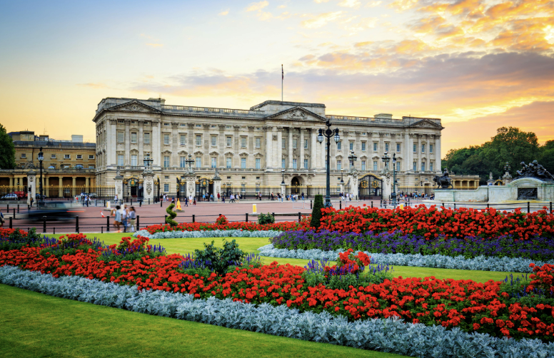
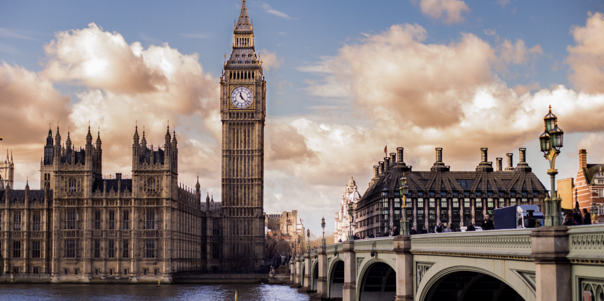
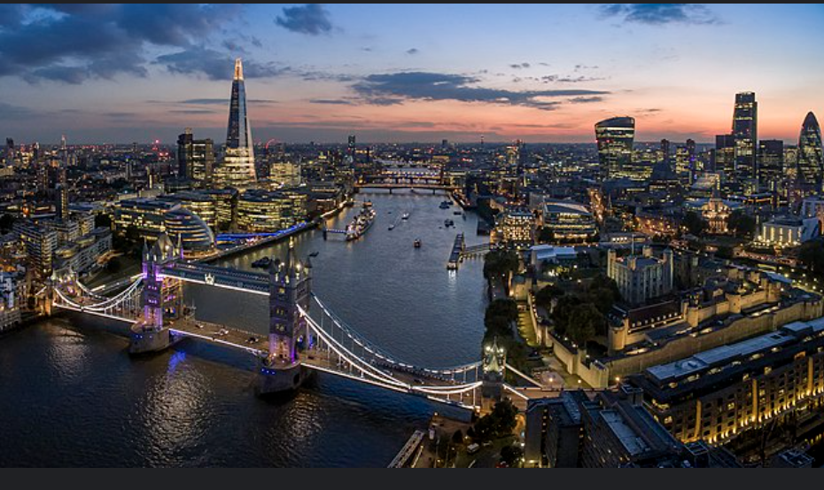

Upcoming: London, UK 06/25
edit



Sustainability: London is a great place to travel sustainably as you can take the train anywhere and everywhere!
London Tube: TFL
Past Trips
Tokyo, Japan 08/24
Aspen, Colorado 02/24
Where Else Would You Like To Go?
- AI Travel Guide and Planner: Our cutting-edge AI tools take the hassle out of travel planning. From choosing destinations to scheduling activities, our AI systems handle it all based on your preferences and interests.
- One-Click Booking: With just one click, you can book your entire trip, including flights, accommodations, and experiences, tailored by our AI to suit your taste and budget.
- Zero-Planning Feature: For those who love surprises, our 0-Planning option allows our AI to select destinations and activities for you. Each day is a new adventure, with popular and off-the-beaten-path spots chosen just for you.
- Advanced Translator Function: Travel with ease as our platform offers an advanced translator that understands regional dialects and nuances, especially in complex languages like Chinese. Our system includes commonly used sentences to ensure you communicate effectively wherever you are.
Commitment to Sustainability
We are dedicated to promoting sustainable travel. Our recommendations prioritize eco-friendly options, helping you make a positive impact on the planet while exploring its wonders.
Join Us
Embark on your next adventure with Your Travel Agency. Experience the future of travel - smarter, greener, and tailored just for you.